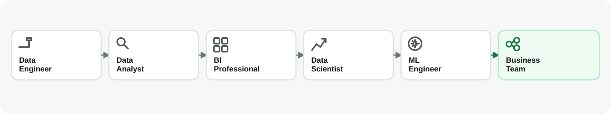
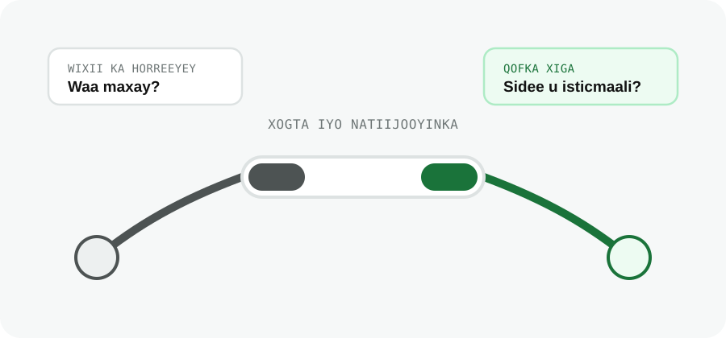

Sida ay Doorarka Xogtu u Wada Shaqeeyaan
Waxaad awoodi doontaa inaad sharaxdo sida doorarka xogtu isugu tiirsan yihiin marka ay hal mashruuc ka wada shaqaynayaan.
Dulmar
Hal macmiil ayaa joojiyey cusboonaysiinta xirmadiisa billaha ah. Lix qof oo shaqooyin kala duwan qabta ayaa ugu dambayn ka shaqaynaya dhacdadaas, midkoodna keligiis ma qaban karo shaqada oo dhan.
data analysis, Business Intelligence, Data Science, Machine Learning, iyo Data Engineering waa qaybo kala duwan oo isku xiran. Marka lagu daro dadka isticmaala natiijooyinkooda, waxay wada sameeyaan nidaamka xogta (data ecosystem).
Hal Nidaam, Doorar Badan
Shirkadaha waaweyn, waa dhif in hal qof keliya qabto dhammaan shaqada xogta. Kooxo leh aqoon iyo shaqooyin kala duwan ayaa wada shaqeeya. Doorarka caamka ah waxaa ka mid ah:
Shirkad yar, hal qof ayaa qaban kara dhowr door oo kuwan ka mid ah. Shirkad weyn, doorarka waxaa qaban kara kooxo kala duwan. Labada xaaladoodba, shaqooyinku waa inay si fiican isugu xirmaan.
Sida ay u Wada Shaqeeyaan
Hal macmiil ayaa joojiyey cusboonaysiinta xirmadiisa mobile data ee billaha ah. Aan eegno sida doorarka kala duwani uga wada shaqeeyaan dhacdadaas. Jaantuskani wuxuu muujinayaa hal hab ay shaqadu u socon karto:

Jaantuskani ma muujinayaan qof shaqo ka gudbaya oo shaqo kale u wareegaya. Waxay muujinayaan sida xogta iyo natiijooyinka hal mashruuc uga gudbaan koox una gudbaan kooxda xigta.
- Data Engineer ayaa ururiya diiwaannada lacag-ku-shubashada iyo xirmooyinka, kadibna ka dhiga kuwo lagu kalsoonaan karo
- Data Analyst ayaa xaqiijiya in heerka cusboonaysiinta xirmooyinka uu hoos u dhacay, wuxuuna ogaadaa goorta iyo halka hoos u dhacu ka bilowday
- BI Professional ayaa dhisa dashboard toddobaad kasta muujinaya heerka cusboonaysiinta
- Data Scientist ayaa baara sababaha suurtagalka ah, wuxuuna tijaabiyaa in caddayntu taageerayso sababahaas
- Haddii saadaalintu caawinayso, ML Engineer ayaa model-ka geliya xaalad isticmaal si loo calaamadeeyo macaamiisha laga yaabo inay baxaan
- Kooxda ganacsiga (Business Team) ayaa goʼaamisa inay qiimaha beddesho, qiimo dhimis sameyso, ama tallaabo kale qaaddo
Halka ay Noocyada Analytics-ku Kaga Jiraan
Afartan nooc ma aha afar shaqo oo kala duwan, mar walbana si isku xigta uma dhacaan. Waa afar nooc oo suʼaalo ah oo ay dad kala duwan oo nidaamka xogta ka tirsan gacan ka geysan karaan ka jawaabistooda.
Qodobka Muhiimka ah
Qofna silsiladdan shaqada oo dhan ma qaban, loomana baahnayn. Qof walba wuxuu u baahnaa inuu ogaado wixii ka horreeyey shaqadiisa, waxa ay shaqadiisu ku dartay, iyo sida qofka xiga u isticmaali doono.

Taasi waa faaʼiidada dhabta ah ee fahamka nidaamka xogta. Looma baahna inaad dhammaan qaybaha ka shaqayso, laakiin waa inaad garataa waxa qof kale kuu soo gudbiyey iyo waxa lagaaga baahan yahay inaad ku darto.